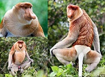
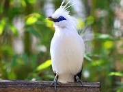

| Gambar | Nama | Asal - Penyebaran | Taksonomi | Ciri Khas |
|---|---|---|---|---|
|  | Bekantan | Kalimantan | Filum:Chordata Kelas:Mammalia Ordo:Primates Famili:Cercopithecidae Genus:Nasalis Spesies:Nasalis larvatus |
Salah satu hewan juga yang punya ciri khas hidung yang besar. Tak hanya itu saja, bekantan jantan dan bekantan betina juga memiliki perbedaan fisik yang mencolok, teman-teman.
Sayangnya, bekantan kini dalam status konservasi terancam. Saat ini populasinya diperkirakan hanya 20 ribuan ekor.
Baca Selengkapnya Disini |
| Gajah Sumatra | Sumatra | Filum:Chordata Kelas:Mammalia Ordo:Proboscidea Famili:Elephantidae Genus:Elephas Spesies:E.maximus |
Ciri lain gajah Sumatra adalah memiliki bobot antara 3-5 ton dengan tinggi 2-3 meter dan memiliki kulit yang lebih terang. Tak hanya itu saja, hanya gajah jantan yang memiliki gading panjang, bagian kepala memiliki tonjolan, dan kupingnya berukuran kecil.
Baca Selengkapnya Disini |
|
| Harimau Sumatra | Sumatra | Filum:Chordata Kelas:Mammalia Ordo:Carnivora Famili:Felidae Genus:Panthera Spesies:P.tgris |
Harimau Sumatra memiliki ukuran tubuh yang lebih kecil dibandingkan sub-spesies harimau lainnya, teman-teman. Warna kulit harimau Sumatra juga cenderung lebih gelap, mulai dari kuning kemerahan hingga oranye tua dengan garis yang lebih rapat.
Baca Selengkapnya Disini |
|
| Pesut Mahakam | Kalimantan | Filum:Chordata Kelas:Mammalia Ordo: Artiodactyla Famili:Delphinidae Genus:Orcaella Spesies:Orcaella brevirostris |
Tubuh pesut berwarna abu-abu sampai wulung tua, lebih pucat dibagian bawah serta tidak memiliki pola khas. Sirip punggungnya kecil dan membundar di belakang pertengahan punggung. Dahinya tinggi dan berbentuk bundar, tidak ada moncong seperti lumba-lumba lain. Sirip dadanya lebar membundar.
Baca Selengkapnya Disini |
|
| Orang Utan | Sumatra dan Kalimantan | Filum:Chordata Kelas:Mammalia Ordo:Primates Famili:Hominidae Genus:Pongo Spesies:Pongo pygmaeus |
Hewan ini merupakan sejenis kera besar yang memiliki bulu kemerahan. Ia juga memiliki lengan panjang yang kuat, kaki pendek, dan tidak punya ekor. Habitat orang utan adalah di hutan tropis Indonesia dan Malaysia, khususnya Pulau Kalimantan dan Sumatra.
Baca Selengkapnya Disini |
|
|  | Burung Jalak Bali | Bali | Filum:Chordata Kelas:Aves Ordo:Passeriformes Famili:Sturnidae Genus:Leucopsar Spesies:Leucopsar rothschildi |
Jalak bali adalah burung pengicau yang memiliki ukuran sedang. Panjang burung ini tidak sampai 25 cm. Jalak bali merupakan hewan endemik Indonesia karena hanya bisa ditemukan di hutan bagian barat Pulau Bali
Baca Selengkapnya Disini |
| Badak | Jawa dan Sumatra | Filum:Chordata Kelas:Mammalia Ordo:Passeriformes Famili:Sturnidae Genus:Leucopsar Spesies:Leucopsar rothschildi |
Badak tersebar di berbagai wilayah seperti Jawa dan Sumatera. Contohnya saja badak bercula satu yang ada di Banten. Cula badak ini berukuran 25 cm berwarna gelap. Badak Jawa memiliki postur tegap dan berat tubuh sekitar 1.600-2.280 kilogram.
Baca Selengkapnya Disini |
|
| Beruang Madu | Kalimantan dan Sumatra | Filum:Chordata Kelas:Mammalia Ordo:Carnivora Famili:Ursidae Genus:Helarctos Spesies:Leucopsar malayanus |
Beruang madu yang memiliki bulu warna hitam. Sedangkan warna putih dan kuning berada di bagian dada. Beruang madu ini memiliki kuku panjang untuk memanjat pohon. Beruang juga identik dengan madu sebagai makanan favoritnya, di mana untuk mendapatkannya, hewan ini kerap mencari di pohon tinggi.
Baca Selengkapnya Disini |
|
| Trenggiling | Jawa | Filum:Chordata Kelas:Mammalia Ordo:Pholidota Famili:Manidae Genus:Manis Spesies:M.javanica |
Trenggiling adalah hewan mammal dengan tubuh dilindungi oleh sisik-sisik yang ddapat bergerak dan berujung runcing. Tubuh individu dewasa SVL sekitar 79-88 cm panjangnya. Sisik menutupi bagian kepala hingga ujung nostril sampai ujung ekor. Sisik tersebut tersusun tumpang tindih.
Baca Selengkapnya Disini |
|
| Banteng | Jawa dan Kalimantan | Filum:Chordata Kelas:Mammalia Ordo:Artiodactyla Famili:Bovidae Genus:Bos Spesies:B.javanicus |
Termasuk hewan yang berbadan besar, tegap, dan kuat. Bahu depan hewan ini bahkan lebih tinggi dibandingkan bagian belakangnya. O iya, tanduk banteng jantan berbentuk rucing dan melengkung ke arah depan. Sementara banteng betina memiliki tanduk yang lebih kecil yang melengkung ke belakang.
Baca Selengkapnya Disini |
|
| Rangkong | Kalimantan | Filum:Chordata Kelas:Aves Ordo:Bucerotiformes Famili:Bucerotidae Genus:Buceros Spesies:B.bicornis |
Cara termudah mengidentifikasi rangkong adalah dari paruhnya yang besar, bentuknya khas, dan warnanya mencolok. Ciri khas lain burung ini adalah tubuhnya besar, teriakan nyaring dan kepak sayap yang keras saat terbang melintas.
Baca Selengkapnya Disini |
|
| Penyu Hijau | Pesisir Bali | Filum:Chordata Kelas:Reptilia Ordo:Testudines Famili:Cheloniidae Genus:Chelonia Spesies:Chelonia mydas |
Penyu hijau memiliki keunikan yakni bentuk karapasnya yang melebar. Karapas tersebut berwarna hitam atau kuning kehijau-hijauan. Sementara bagian pinggir karapasnya berwarna putih. Terdapat plastron yang berwarna putih.
Baca Selengkapnya Disini |